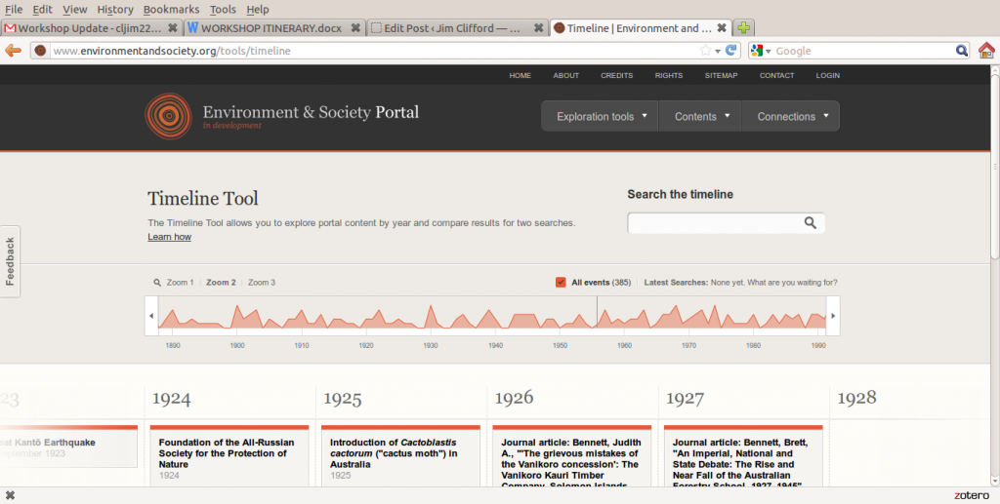
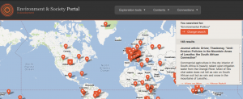

{kind=link}

[This post was first published on NiCHE's Otter Group Blog] A few weeks ago I attended a great little workshop at the Institute for Environmental History at St. Andrews University in Scotland. The papers ranged from Mark McLaughlin's investigation of the links between New Brunswick's scientists and Rachel Carson's Silent Spring to a provocative paper on the future of nuclear energy by St. Andrews' Kirsten Jenkins. One that stood out as a great topic for my upcoming Otter post, however, was Benjamin Tendler's presentation on the Environment & Society Portal. I'd seen a very short presentation on the Rachel Carson Center's innovative website in Madison, but this time Benjamin had the time to show off a lot more features. The Portal, like the NiCHE website, is built using Drupal and they've developed some really interesting features to allow visitors to explore environmental history content on the web. This includes material produced for the E & S Portal and other journal articles, webpages and podcasts aggregated from the wider web (including material from the NiCHE website). Along with the standard search box, visitors can explore the material through a map, a time-line or through connected keywords. The map pins material to locations on the map and allows you to pan and zoom to explore topics related to a particular country, region or city.{kind=link}

The time-line provides a similar experience, allowing you to scan back and forward in time and to zoom in and out for more or less detail. Finally the Trace Connections option allows you to click through a range of connected ideas, moving from broad to more narrow, but related topics. The project team is working with environmental historians to create new web content. This includes the first two Exhibitions: Promotion and Transformation of Landscapes along the CB&Q Railroad by Eric D. Olmanson and Rachel Carson's Silent Spring, A Book That Changed the World by Mark Stoll. These exhibitions are an exciting development in academic publishing, as they seek to use the potential of the web to present information in a new way, instead of simply reproducing the format of paper journals and books. Along with the longer form exhibitions, they are also developing an encyclopedia-like exploration of European environmental history called Arcadia, with shorter articles on a growing range of topics. In the early stages these articles are focused on European environmental history, but in the future they plan to expand it to other regions of the world. As I mentioned above, the Portal also includes other content from around the web. Much of this in housed in the Multimedia Library. They explain that the "Multimedia Library aims to inspire curiosity about environmental humanities topics with a diverse collection of digitized documents, images, podcasts, and films. It is intended not as a canon or 'best of' collection, but as a diverse offering that we hope will spark interest and possibly even new ideas for research." The website is still in development and there are lots of gaps in the content. You can get involved with the project and volunteer to contribute content by getting in touch with the project team using the feedback form on the website.